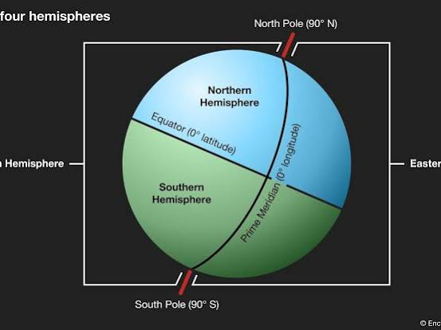
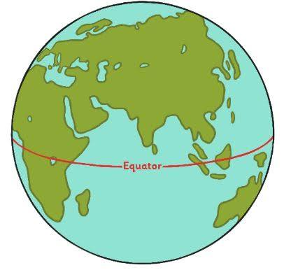
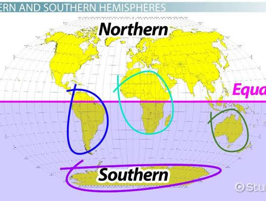
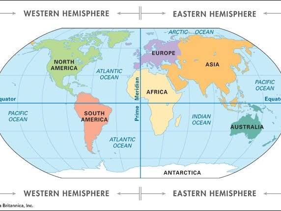
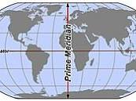
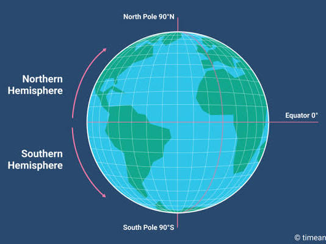
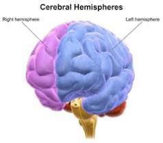
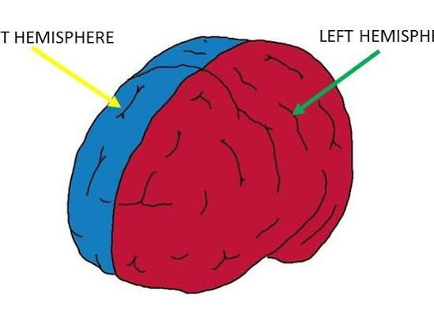

Conversation 01
Southern Hemisphere
Prompt 1 · You
hemisphere S .
Response 1 · Google AI Mode








The abbreviation "hemisphere S" refers to the Southern Hemisphere, the half of the Earth that lies south of the Equator (0° latitude).  Wikipedia +1
Wikipedia +1
Wikipedia +1Key Characteristics of the Southern Hemisphere
- Geography: It contains only about 32% of Earth's landmass but accounts for the vast majority of the world's ocean surface. Wikipedia
- Landmasses: It includes all of Antarctica and Australia, most of South America, the southern third of Africa, and parts of maritime Southeast Asia. Wikipedia +1
- Population: It is home to roughly 10% of the global human population (about 800 million people) due to its limited land coverage compared to the Northern Hemisphere. Wikipedia
- Seasons: Its seasons are completely inverted relative to the Northern Hemisphere. Summer spans from December to March, while winter occurs from June to September.
 YouTube·History Illustrated +1
YouTube·History Illustrated +1
Other Contextual Meanings of "S" Hemispheres
If your query is not geographical, "S" might refer to:
- Southern Celestial Hemisphere: The southern half of the sky as viewed from space, mapped out by astronomers using coordinates south of the celestial equator. Wikipedia
- Sensory / Somatosensory Cortex: In neuroscience, the brain's cerebral hemispheres are divided into lobes, where the postcentral gyrus handles sensory processing ("S1" or primary somatosensory cortex) across both the left and right hemispheres. EBSCO
Are you looking for specific information about the Southern Hemisphere, such as its climate patterns, countries, or astronomical constellations? Let me know how I can help narrow this down!
Source links preserved from this response
- en.wikipedia.org
https://en.wikipedia.org/wiki/Hemispheres_of_Earth - Antarctica
https://en.wikipedia.org/wiki/Antarctica - Australia
https://en.wikipedia.org/wiki/Australia - South America
https://en.wikipedia.org/wiki/South_America - Africa
https://en.wikipedia.org/wiki/Africa - Southeast Asia
https://en.wikipedia.org/wiki/Southeast_Asia - www.youtube.com
https://www.youtube.com/watch?v=-arnBFn8MVk - en.wikipedia.org
https://en.wikipedia.org/wiki/Hemisphere - www.ebsco.com
https://www.ebsco.com/research-starters/health-and-medicine/cerebral-hemisphere/